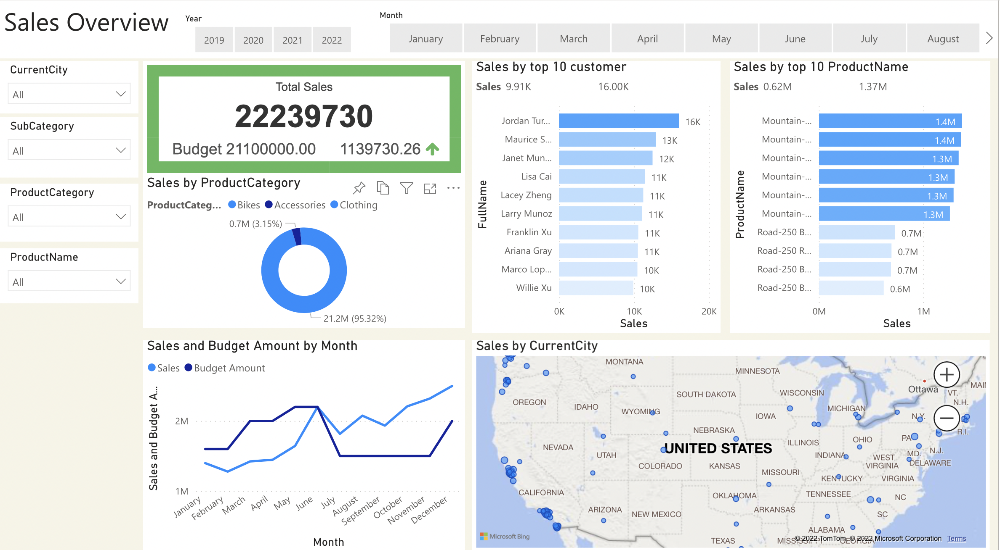

I use a housing information data set in the data cleansing project that needs some cleaning. Some of the information in that data set is Null, Duplicate, or too-long addresses that need to break out into small pieces. Therefore, I tried to remove these issues from my data source using some queries.
Bellow Dashboard is a company's sales report that shows their sales in different models, such as sales by top 10 customers, sales by top 10 products, or sales by the current country. To do this project, I first cleaned data in SQL and then created the company's sales dashboard in PowerBI based on the cleaned data.

This Analysis helps the University find the effective utilization of their teaching spaces which is critical to delivering all their learning activities. The Analysis evaluates how well business stakeholders in universities utilize their teaching spaces. The goal is to develop and frame strategies that the University and its stakeholders can consider to strengthen scheduling and space management in teaching and learning excellence.

In Inquiry SQL Project, used some T-SQL commands from the Covid Death data between December 2019 to January 2022 from the World Data Website to create reports such as total Covid cases of vs. total deaths in the globe and each country, finding countries with the highest infection rate compared to population, countries with most increased death per population, total population vs. complete vaccinations in global and each country and amount of vaccinated people in Canada. Finally, I created views from these reports in SQL.
In creating the Tableau Dashboard project, I used some data sources such as Covid death data from the World Data website to create a dashboard. For example, the Covid dashboard contains some visual graphs about death rate, Percent Population Infected by Country, and infection rate by continent. from the link below, you can find different visual analytics dashboards in my Tableau public profile.